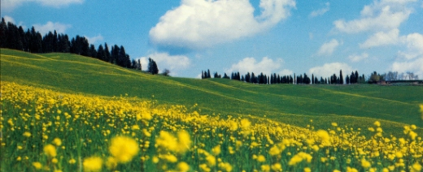

アルゼンチンポリフロラハニー
アルゼンチンは、その草地がよく知られており、最大の蜂蜜生産国と輸出国の一つです。 それは長く、推定可能な養蜂の伝統を持っています。生産された蜂蜜のほとんどは、主に透明で、多くの異なる花からの野生の花です。 Apicoltura Pianaはアルゼンチンから選ばれたハチミツを30年以上輸入しています。
アルゼンチンのポリフララ・ハニー
色と外観
薄い琥珀色で結晶化しています。
風味と味
やや香り豊かで、フルーティな香り、独特の香り。
特異性
透明な色と味わいのある味。
ヒトの摂食における使用
蜂蜜はペストリー製作に広く使われています。 砂糖代用品として適しており、小麦パン全体に広がっています。
使用可能なサイズ
450gスクイーザPET、500gおよび1000gガラス瓶
蜂蜜の種類
慎重に選択して管理しているイタリア、ハンガリー、アルゼンチンの様々な蜂蜜。